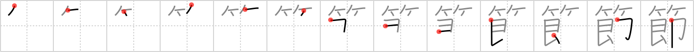

節
← →
node

Reading:
On-Yomi: セツ、セチ — Kun-Yomi: ふし、-ぶし、のっと
Heisig story:
Bamboo . . . instant.
Koohii stories:
1) [taijuando] 28-6-2006(268): Counting the nodes on bamboo is an instant way to tell its age.
2) [rhclaghorn] 14-3-2008(71): A certain species of bamboo is considered the fastest growing plant in the world. A new node can be formed in an instant.
3) [ayoung24] 12-11-2007(40): Is it just me, or do the nodes on a bamboo tree look like a stack of Cup Noodle instant soup cups?
4) [I_pity_the_fool] 28-12-2008(25): See the legend here - http://en.wikipedia.org/wiki/Bamboo. When you see a bamboo tree with a many nodes, don't be a fool and touch it - you may be joined to it in an instant.
5) [Praxix] 29-1-2010(15): Forget the quicksort algorithm and tree structures, use a bamboo structure and your nodes will be sorted instantly.